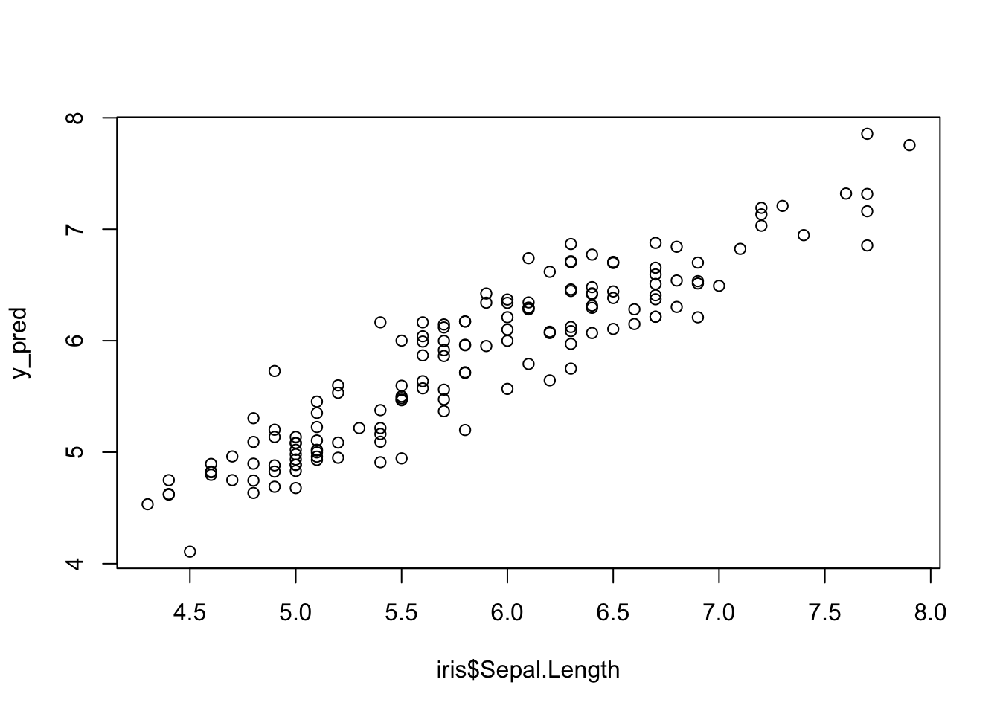

Chapter 1 Introduction to R programming
This notebook collects the scripts used for teaching in BIOF1001 for Introduction to R (1 hour teaching). You can get this Rmd file on Moodle or here (right-click and “save link as” to download).
R is a programming language, particularly popular for its power in statistical computing, elegant graphics, and also genomic data analysis. It is a free and open-source software, with active support and development from the community. Additionally, R is relatively easy to get started for scientific computing.
Note To learn and practice R programming, you need to install
RandRStudioon your computer. You can follow the instructions for installation in the Appendix A chapter.
1.1 Data types
In R language setting (similar to some other programming languages), there are
a few commonly used data types that are predefined in the built-in environment.
You can use the class() and typeof() functions to check the class and
data type of any variable. In total, R has five data types:
- Numeric
- Integers
- Complex
- Logical
- Characters
1.1.1 nemeric (or double)
The numeric is for numeric values, as the most common and the default
data type. The numeric datatype saves values in double precision (double
number of bytes in memory), so the type is also double.
1.1.2 integer
The integer is another data type used for the set of all integers. You can use
the capital ‘L’ notation as a suffix to specify a particular value as the
integer data type. Also, you can convert a value into an integer type using the as.integer() function.
1.1.3 logical
In R, the logical data type takes either a value of true or false. A logical
value is often generated when comparing variables.
1.1.4 character
In R, the character is a data type where you have all the alphabets and
special characters. It stores character values or strings. Strings in R can
contain alphabets, numbers, and symbols. The character type is usually denoted
by wrapping the value inside single or double inverted commas.
1.1.5 Memeory usage
Each data type is explicitly defined, especially the size of the memory.
When initializing a certain data type, there are a few small bytes used to store basic information. Let’s look at the empty values.
object.size(numeric())
#> 48 bytes
object.size(integer())
#> 48 bytes
object.size(logical())
#> 48 bytes
object.size(character())
#> 48 bytesTo illustrate, let’s use 1000 elements below to show the memory size usage for each data type. As we will see, integer and logical use 4 bytes per element, which is only half of the memory usage by double (numeric) and character of 8 bytes.
1.2 Data structures
Data structure is one of the most important features in programming. It involves how the data is organised and can be accessed and modified. Using an appropriate data structure may largely improve computing efficiency.
1.2.1 Vector
Vector is a basic data structure in R. It contains elements in the same data
type (no matter double, integer, character or others).
You can check the data type by using typeof() function and the length of the
vector by length() function.
Since a vector has elements of the same type, this function will try and coerce elements to the same type, if they are different. Coercion is from lower to higher types, i.e., from logical to integer to double to a character.
See more introduction here.
1.2.2 Matrix
Matrix is a two-dimensional data structure. It is in principle built based on
vector but has more convenient built-in functions for computation.
It has rows and columns, both of which can also have names. To check the dimensions,
you can use the dim() function.
See more introduction here.
A <- matrix(1:12, nrow=3)
A
#> [,1] [,2] [,3] [,4]
#> [1,] 1 4 7 10
#> [2,] 2 5 8 11
#> [3,] 3 6 9 12
B <- matrix(1:12, nrow=3, byrow=TRUE)
B
#> [,1] [,2] [,3] [,4]
#> [1,] 1 2 3 4
#> [2,] 5 6 7 8
#> [3,] 9 10 11 12
colnames(A) <- c("C1","C2","C3","C4")
rownames(A) <- c("R1","R2","R3")
A
#> C1 C2 C3 C4
#> R1 1 4 7 10
#> R2 2 5 8 11
#> R3 3 6 9 121.2.2.1 Index Vector and Matrix
To index vector, you can use logical or integer, or the element name if it
has.
Note, when using an integer for indexing, the index starts from 1 in R, unlike
most programming languages where the index starts from 0.
We can also use negative integers to return all elements except those specified. But we cannot mix positive and negative integers while indexing and real numbers if used are truncated to integers.
N.B., when using logical as the index, be careful if the index length is different from the vector.
x <- 1:12
x[3]
#> [1] 3
x[2:5]
#> [1] 2 3 4 5
x[c(2, 5, 6)] # index with integer
#> [1] 2 5 6
x[c(TRUE, FALSE, FALSE, TRUE)] # index with logical value
#> [1] 1 4 5 8 9 12Now, let’s index a matrix. It is very similar to vector, but it has both rows and columns.
A <- matrix(1:12, nrow=3)
colnames(A) <- c("C1","C2","C3","C4")
rownames(A) <- c("R1","R2","R3")
A
#> C1 C2 C3 C4
#> R1 1 4 7 10
#> R2 2 5 8 11
#> R3 3 6 9 12
A[1, 2]
#> [1] 4
A[1, "C2"]
#> [1] 4
A[1, c(2, 3)]
#> C2 C3
#> 4 7
A[1:2, c(2, 3)]
#> C2 C3
#> R1 4 7
#> R2 5 8Single row or column matrix will become a vector, unless using drop=FALSE
1.2.3 List
Different from vector that has all elements in the same data type, the list
data structure can have components of mixed data types.
More broadly, a list can contain a list of any data structure: value, vector,
matrix, etc.
We can use str() function to view the structure of a list (or any object).
x <- list(2.5, TRUE, 1:3)
x
#> [[1]]
#> [1] 2.5
#>
#> [[2]]
#> [1] TRUE
#>
#> [[3]]
#> [1] 1 2 3
str(x)
#> List of 3
#> $ : num 2.5
#> $ : logi TRUE
#> $ : int [1:3] 1 2 3We can also have a name for each element:
1.2.4 Data Frame
Data frame is widely used for rectangular data, where each column has the same data type (vector) but different columns can have different data types (like Excel)
As you guess, the data frame is a special type of list: A list of vectors with the same length.
1.2.5 Factor vs vector
For vector, if it only contains pre-defined values (which can have specified orders), you may consider using factor.
- Factor is a data structure used for fields that takes only predefined, finite number of values (categorical data)
- The order of predefined values can be specified, instead of alphabetic by default
x = c("single", "married", "married", "single") # vector
x
#> [1] "single" "married" "married" "single"
class(x)
#> [1] "character"
typeof(x)
#> [1] "character"y = factor(c("single", "married", "married", "single"))
y
#> [1] single married married single
#> Levels: married single
class(y)
#> [1] "factor"
typeof(y)
#> [1] "integer"1.3 Read and write files (tables)
Besides operating in the R environment, we also want to read data from files or write results into files.
For tables, R has convenient built-in function read.table() and write.table().
1.3.1 Read file
We can use read.table() function to read tables, e.g., in comma separated
values (csv) or tab separated values (tsv) formats.
See full manuals: help(read.table) or ?read.table or its
online manual
Here, let’s read an example file. Data is available on Moodle and on the github repository
df = read.table("./SRP029880.colData.tsv", sep="\t")
df
#> source_name group
#> CASE_1 metastasized cancer CASE
#> CASE_2 metastasized cancer CASE
#> CASE_3 metastasized cancer CASE
#> CASE_4 metastasized cancer CASE
#> CASE_5 metastasized cancer CASE
#> CTRL_1 normal colon CTRL
#> CTRL_2 normal colon CTRL
#> CTRL_3 normal colon CTRL
#> CTRL_4 normal colon CTRL
#> CTRL_5 normal colon CTRL1.4 Functions and Packages
As experienced above, we have used function multiple times, e.g.,
read.table and typeof.
As one more example mean() is a function here and it is from the base package
Generally speaking, A function is a set of statements organized together to perform a specific task. Many lines of codes are packed into one function & it’s reusable.
A function can be written in the same R file and loaded, or it can be distributed as part of a package. For using such functions, we need to install the corresponding package and load it.
1.4.1 Install packages
It depends on where the package is stored. Please refers to the documentation of the specific package you want to install and use.
- CRAN (the Comprehensive R Archive Network): main platform
- For example:
install.packages("ggplot2")
- For example:
- Bioconductor: primarily for biology related packages
- For example:
BiocManager::install("DESeq2")
- For example:
As an example, we can install the powerful plotting package ggplot2 from CRAN.
1.4.2 Apply function repeatly
We may often want to use a certain function for multiple times, e.g., calculate
the sample mean for many genes. There are multiple ways to achieve it, e.g., via a
for loop. Here, we will introduce apply and its variants for this purpose.
See more introductions here.
1.4.2.1 apply, lapply, sapply and vapply
In short, the apply() function and its variants apply a certain function to
each element of a vector, a matrix, or a list.
1.4.2.1.1 apply for matrix
The apply(X, MARGIN, FUN) function works for matrix (or array) for rows or columns. For example, calculating the median of each column:
1.4.2.1.2 lapply, sapply, and vapply for list or vector
The above apply function requires MARGIN, hence won’t work for vector or
list. There are a few variants to support lists or vectors for different purposes.
From the manual, we can find out the arguments for these three functions:
lapply(X, FUN, …)sapply(X, FUN, …, simplify = TRUE, USE.NAMES = TRUE)vapply(X, FUN, FUN.VALUE, …, USE.NAMES = TRUE)
Let’s look at examples. The lapply works for vector and list and returns a list:
A<-c(1:9)
B<-c(1:12)
C<-c(1:15)
my.lst<-list(A,B,C)
lapply(my.lst, median)
#> [[1]]
#> [1] 5
#>
#> [[2]]
#> [1] 6.5
#>
#> [[3]]
#> [1] 8If you want the return as a vector, you can use sapply() for simplified output:
If you want to check the data type of the return, you can further use the vapply function. An error will be raised if the data type does not match.
Note, the FUN.VALUE argument takes the value as a template, so the use of
numeric(1) or any numeric value, e.g., 3 is the same.
1.5 Plotting
1.5.1 datasets
Let’s use a built-in dataset for illustration: iris (4 flower features in 3 plants)
head(iris)
#> Sepal.Length Sepal.Width Petal.Length Petal.Width Species
#> 1 5.1 3.5 1.4 0.2 setosa
#> 2 4.9 3.0 1.4 0.2 setosa
#> 3 4.7 3.2 1.3 0.2 setosa
#> 4 4.6 3.1 1.5 0.2 setosa
#> 5 5.0 3.6 1.4 0.2 setosa
#> 6 5.4 3.9 1.7 0.4 setosasummary(iris)
#> Sepal.Length Sepal.Width Petal.Length Petal.Width
#> Min. :4.300 Min. :2.000 Min. :1.000 Min. :0.100
#> 1st Qu.:5.100 1st Qu.:2.800 1st Qu.:1.600 1st Qu.:0.300
#> Median :5.800 Median :3.000 Median :4.350 Median :1.300
#> Mean :5.843 Mean :3.057 Mean :3.758 Mean :1.199
#> 3rd Qu.:6.400 3rd Qu.:3.300 3rd Qu.:5.100 3rd Qu.:1.800
#> Max. :7.900 Max. :4.400 Max. :6.900 Max. :2.500
#> Species
#> setosa :50
#> versicolor:50
#> virginica :50
#>
#>
#> There are two common ways of plotting:
- the built-in plotting functions
- the ggplot format


1.5.3 ggplot2
See more instructions: http://www.sthda.com/english/wiki/ggplot2-essentials

1.6 Scientific and statistical computating
1.6.1 Orders of operators
See lecture slides.
If you are not sure about a certain ordering, use brackets!
1.6.3 Correlation
cor.test(iris$Sepal.Length, iris$Petal.Length)
#>
#> Pearson's product-moment correlation
#>
#> data: iris$Sepal.Length and iris$Petal.Length
#> t = 21.646, df = 148, p-value < 2.2e-16
#> alternative hypothesis: true correlation is not equal to 0
#> 95 percent confidence interval:
#> 0.8270363 0.9055080
#> sample estimates:
#> cor
#> 0.87175381.6.4 Hypothesis testing (t test)
x1 <- iris$Sepal.Length[iris$Species == "setosa"]
x2 <- iris$Sepal.Length[iris$Species == "versicolor"]
x3 <- iris$Sepal.Length[iris$Species == "virginica"]
t.test(x2, x3)
#>
#> Welch Two Sample t-test
#>
#> data: x2 and x3
#> t = -5.6292, df = 94.025, p-value = 1.866e-07
#> alternative hypothesis: true difference in means is not equal to 0
#> 95 percent confidence interval:
#> -0.8819731 -0.4220269
#> sample estimates:
#> mean of x mean of y
#> 5.936 6.5881.6.5 Regression
fit <- lm(Sepal.Length ~ Sepal.Width + Petal.Length + Petal.Width, data=iris)
summary(fit) # show results
#>
#> Call:
#> lm(formula = Sepal.Length ~ Sepal.Width + Petal.Length + Petal.Width,
#> data = iris)
#>
#> Residuals:
#> Min 1Q Median 3Q Max
#> -0.82816 -0.21989 0.01875 0.19709 0.84570
#>
#> Coefficients:
#> Estimate Std. Error t value Pr(>|t|)
#> (Intercept) 1.85600 0.25078 7.401 9.85e-12 ***
#> Sepal.Width 0.65084 0.06665 9.765 < 2e-16 ***
#> Petal.Length 0.70913 0.05672 12.502 < 2e-16 ***
#> Petal.Width -0.55648 0.12755 -4.363 2.41e-05 ***
#> ---
#> Signif. codes: 0 '***' 0.001 '**' 0.01 '*' 0.05 '.' 0.1 ' ' 1
#>
#> Residual standard error: 0.3145 on 146 degrees of freedom
#> Multiple R-squared: 0.8586, Adjusted R-squared: 0.8557
#> F-statistic: 295.5 on 3 and 146 DF, p-value: < 2.2e-16This means the fitted regression is:
Sepal.Length ~ 1.856 + 0.65*Sepal.Width + 0.709*Petal.Length - 0.556*Petal.Width
We can check how good the regression is by plotting it out
y_pred <- fit$coefficients[1] +
fit$coefficients[2] * iris$Sepal.Width +
fit$coefficients[3] * iris$Petal.Length +
fit$coefficients[4] * iris$Petal.Width
cor(iris$Sepal.Length, y_pred)
#> [1] 0.926613
1.8 Exercises
This list of exercises will serve as a 2-hour demonstration in the BIOF1001 course. For other learners, you can go through it as homework. The expected time is around two hours if you have read the R materials carefully together with trying them with your own R environment.
Note, before you get started, please make sure that you are familiar with the panels in RStudio. You may watch this YouTube Video or check this RStudio cheatsheet.
1.8.1 Part 1. Basics (~40min)
- Q1: We have 25 students in BIOF1001, to store the final marks (0 to 100 with a precision of 0.1), what data type will we use?
- Q2: For the grades (
A+toF), what data type and data structure can be used to keep the memory minimal?
- Q3: Make a matrix with name
my_matrix, shape of 5 rows and 2 columns and values from 3 to 12. The first row is 3 and 4. Hint: for making a vector from 3 to 12, you may useseq()or:.
- Q4: Based on
Q3, add the row names toDay1toDay5and column names toLunchandDinner.
- Q5: Based on
Q4, get a matrix with shape of 3x1 and values of 6, 8, 10 from the matrixmy_matrix.
- Q6: What will you get for
my_matrix[c(TRUE, FALSE, FALSE, TRUE), ]? Hint: think of recycling if the index length is different from the query dimension (Over-flexibility comes with a price of wrong use).
- Q7: If you have two vectors the BIOF1001
marksandgradesand onecharacterfor teaching performance"good", and you want to store them into one variable, which data structure will you use?
Q8: Now, on your
Desktop folder, make a subfolder with nameR_exercisesand download this file of differentailly expressed genes results Diff_Expression_results.tsv to the folder. Check your current work directory bygetwd()function and change the work directory to the folder you just created. Hint: you may usesetwd()to change the work directory or use theSessionbutton of RStudio.Q9: Related to Q8, use the
read.table()function to load the file into a data frame with the variable namedf_DEG. Hint: You may consider using the full path or just the file name if it’s in the same work directory. Please keepheader=1for the argument. Think how to find help page for a certain function.
- Q10: Can you calculate the
meanandstandard deviationof thelog2FoldChange? If the mean >0.1 and the standard deviation < 3, set thetrendvariable as “increase”, otherwise “not_increase”. What will happen if you add thistrendvariable to the data frame, and why? Hint: usemean()andst()functions for calculating mean and standard deviation.
1.8.2 Part 2. Making plotting (~40min)
Q11: Keep use the
df_DEGfrom part 1 Q9. Now, make a histogram of thelog2FoldChangewith both basic plotting functionhist()andggplot2.Q12: Make a plot with x-axis of
log10(baseMean)and y-axis oflog2FoldChange. Please try both the basicplot()function andggplot2.Q13: Now, manipulate the dataframe by adding two columns:
- Add a column
log2FC_clipfor clipping log2FoldChange to[-5, +5] - Add a column
is_DEforpadj < 0.05
- Add a column
Q14: Try the
summary()function with the abovedf_DEGdata frame, and alsotable()function for theis_DEcolumn.Q15: Based on ggplot2, add the color by the newly added column
is_DE.
Q16: Set the colors to “red” and “grey”, and make it in the order of TRUE and FALSE. Hint: use
factorand set thelevelsparameter.Q17: Save the generated figure into “My_DEG_results.pdf”. Use the ggsave() function. Please set
width = 5, height = 4.
You are expected a figure like this

If you want to change labels on x-axis or y-axis and font size, etc., you can simply Google and find examples.
1.8.3 Part 3. For loop and repeating processing (~40min)
Q18: Load the following table from this file on GitHub and View it in RStudio.
It contains expressoon of 619 transcription factors from 7 Nasopharyngeal carcinoma (NPC) samples and 3 nasopharyngeal lymphatic hyperplasia (NLH) samples. https://github.com/StatBiomed/NegabinGLM/blob/main/data/NPC_NLH-Tcell-donorX.tsv
df_NPC = read.table("https://github.com/StatBiomed/NegabinGLM/raw/main/data/NPC_NLH-Tcell-donorX.tsv", sep="\t", header=1)Q19: Extract the column 5 (HES5) to 623 (LEK4) and make it into a matrix
TF_matHint: how to index a data frame like index a matrix.
Q20: perform normalization. Divide the
TF_matby thedf_NPC$total_countsand multiply by 1000000, and assign it to a new matrix namedTF_mat_norm.You may further consider transformation by log1p(), i.e., log(TF_mat_norm + 1).
Q21: calculate the log fold change on the first gene TP73 in
TF_mat_normbetween NPC (row 1 to 7) and NLH (row 8 to 10) and perform t-test return thepvalue and log fold change.Q22: perform t-test on the all gene in
TF_mat_normbetween NPC (row 1 to 7) and NLH (row 8 to 10). Hint: think of for loop orapply()function.